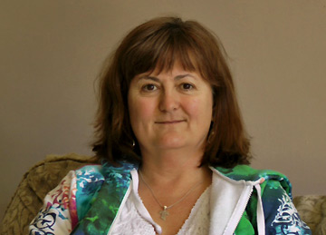

Advice for friends and family
Advice for friends and familySheni

Age: 56-year-old
Age at start caregiving activities: 47
Her background:
Sheni is 56 years old and lives with her husband and two of her three grown children. Sheni’s husband has acquired brain injury (ABI) as the result of complications from a health condition and he suffers from serious short-term memory impairment. Sheni’s youngest son was diagnosed with a brain tumour 12 years ago when he was only 10. He has had several periods of treatment and had brain surgery at age 17. Sheni recently lost her job, so is a full-time caregiver. Her husband requires a well-organized care program, even though he was able to remain home alone for the past few years when Sheni was at work. Her other children help care for their father. Sheni also monitors her son’s health closely and reminds him to take his medication to prevent serious seizures – she worries about him forgetting. Sheni also worries about the family’s financial situation.
Twenty-two years ago, three years after Sheni’s marriage, her husband was diagnosed with hydrocephalus (a build-up of fluid inside the skull that leads to brain swelling). A cerebral shunt was inserted to drain excessive fluids from his brain. After ten years without complications, her husband then started to develop problems sleeping. There was an attempt to resolve these symptoms by modifying the shunt and changing the drainage into his abdominal cavity instead of his spine. Sheni and her husband were not informed that this could lead to more complications.
More than two years later, Sheni woke up one day and found her husband totally disoriented on the floor. The shunt was no longer functioning, and he was suffering from the increased fluids and resultant pressure in his brain. The shunt was replaced in hospital and her husband returned home. However, he had another episode within one month, and he had been diagnosed with bacterial meningitis. A hospital resident suggested removing the shunt to increase his chances of recovery when he was on strong antibiotics. Although Sheni’s family felt that removing the shunt was a bad idea, they agreed under the condition that the resident monitor him closely. Two days after the shunt was removed, Sheni was called early in the morning because her husband had slipped into a severe coma. Even though her husband has since recovered from the coma, his health has significantly and persistently deteriorated.
To save Sheni’s husband’s life, a new emergency shunt was placed outside of his body. After four months of neurological intensive care, Sheni’s family then had a particularly difficult year, characterized by hospitalizations due to shunt complications, as well as rehabilitation sessions in a specialized centre. Finally, in a risky intervention, a shunt-free drainage system was inserted. All of these stressful events had an impact on other areas of Sheni’s family life. Sheni lost her job, and since her formerly self-employed husband no longer had an income, she needed to re-train and search for a new job while caring for her husband and three teenage children.
Sheni did find a new job only 19 months later and secured some support from the Community Care Access Programme (CCAC), but the 14 hours they offered were not enough. Sheni found herself in a desperate situation, where she had limited if not impossible options: leave her husband alone while she worked, pay prohibitive fees for professional care, and/or find help from relative or friends.
Sheni’s retired sister-in-law offered to take care of her brother at her home, which Sheni agreed was the best option at that time. Unfortunately, this decision led to devastating financial and emotional problems for Sheni and her family. These have yet to be fully resolved. Once her husband moved, her sister-in-law disagreed with Sheni’s approach to his care and with how her brother’s savings were being used to provide for family needs such as their son’s medication and the children’s education. Her sister-in-law said harmful things about Sheni to organisations such as the CCAC and the Public Guardian, and moved with her brother more than an hour away from the family home, blocking contact with Sheni and the children. Sheni was then out of contact with her husband.
Her son’s brain tumour continued to grow, and when he reached 17, an urgent operation was required. Sheni was able to re-establish contact with her husband about their son’s brain surgery through her lawyer, who had to work through the Public Guardian to inform her sister-in-law and her husband. But the pain and harm caused to the family by the inability to speak with her children’s father and husband was too much for Sheni. She decided to pay for a live-in caregiver and make arrangements for the return of her husband. Her sister-in-law did not fight this decision. The family was reunited again.
Sheni then had to deal with the damage caused by her sister-in-law’s legal accusations. The Public Guardian had revoked Sheni’s power of attorney, and her husband’s assets had been removed from her and her children. In an attempt to clear her name Sheni hired a lawyer, and a costly six-year battle ensued. In fact, the Public Guardian used a significant amount of her husband’s money to fight her in court. Sheni was eventually able to prove that her sister-in-law had provided false information. However, due to her financial situation, she had to abandon the battle for power of attorney and accept an arrangement with the Public Guardian.
Sheni’s financial future has changed drastically since her husband got sick. She recently lost her job again and worries about whether she will be able to find another one now that her own health has deteriorated. Their assets are rapidly declining, as the Public Guardian charges for everything, and Sheni feels that the Public Guardian did not establish the right balance between benefits to her family versus benefits to her husband. She feels that the financial and emotional damage caused by this whole process amounts to financial child abuse (by the Public Guardian), as it has significantly reduced the means that are available to her children.
As a result of living with constant fear and worry, Sheni has now been diagnosed with post-traumatic- stress disorder (PTSD). Her concentration and memory have notably reduced. She feels less tolerant of the ordinary problems that others are able to deal with, which affects her relationships. She believes that her capacity to cope is insufficient for the problems that she is facing. Sheni is coping with all this by expressing her anger and talking more about her situation. She also does extreme exercises, such as biking a distance of 100 km.
Sheni deeply appreciates it when others can sympathize with her situation, understand and validate what she is going through, and listen carefully even when she needs to vent more than once. She now has some friends she can call at any time and with whom she shares pleasant activities, such as going out for dinner. Sheni has become a resilient caregiver – one that may occasionally need to compromise, but one that never gives up.